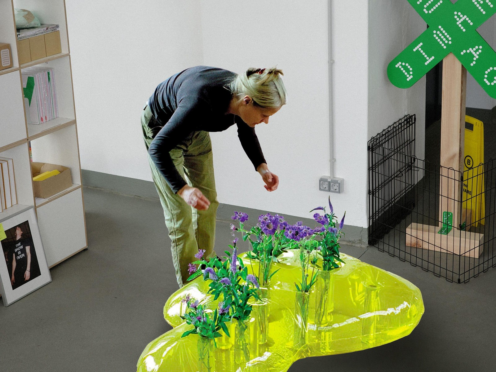
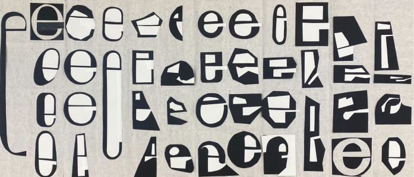

What are some unconventional spaces that satisfy specific or unique needs to you?
List 1-10 items that have distinct internal and external components or features (inside and outside)
How would you describe practical examples of 'in-between spaces'? Name two specific environments where this concept is applied.
What do you do to express your desire or emotion? Going to certain places, decorating your room/backyard, collecting in online spaces, writing it down on a journal etc
What specific location or type of setting do you consider an 'escape'?
Can you describe a situation or place where you see a struggle/tension? This can be about you or generally!

